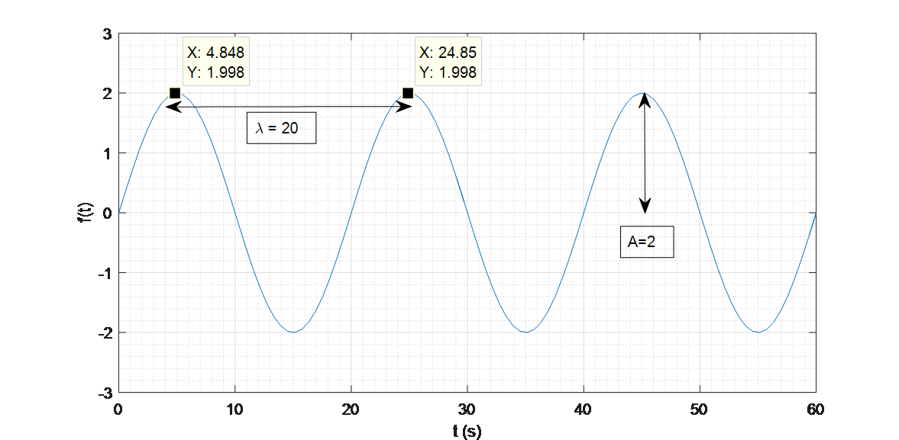
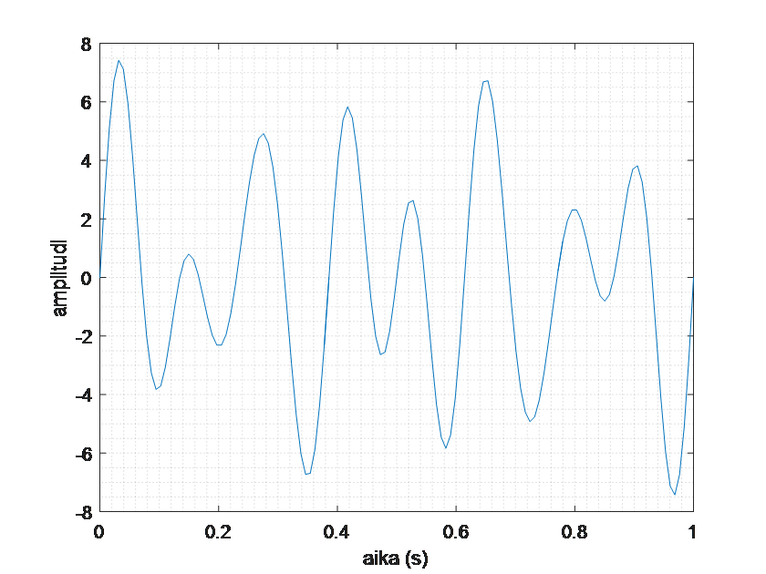
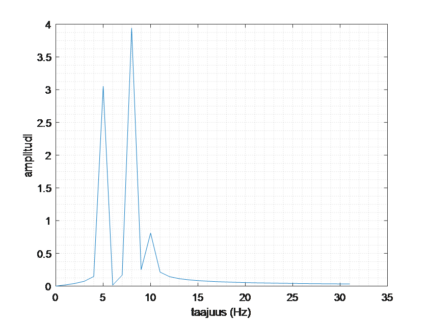
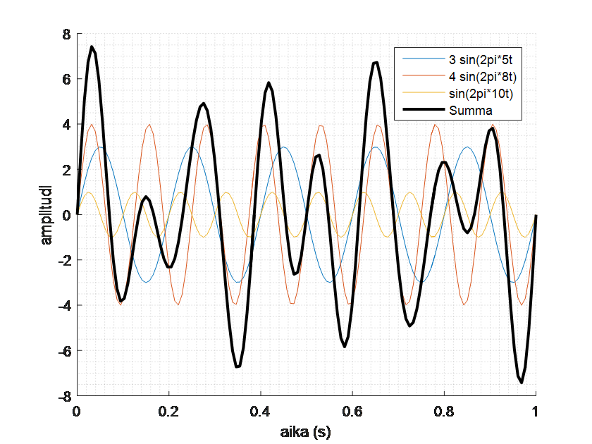
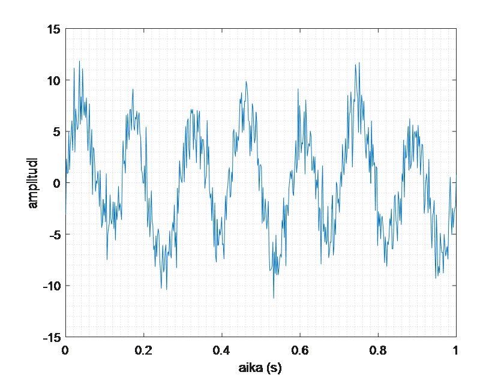
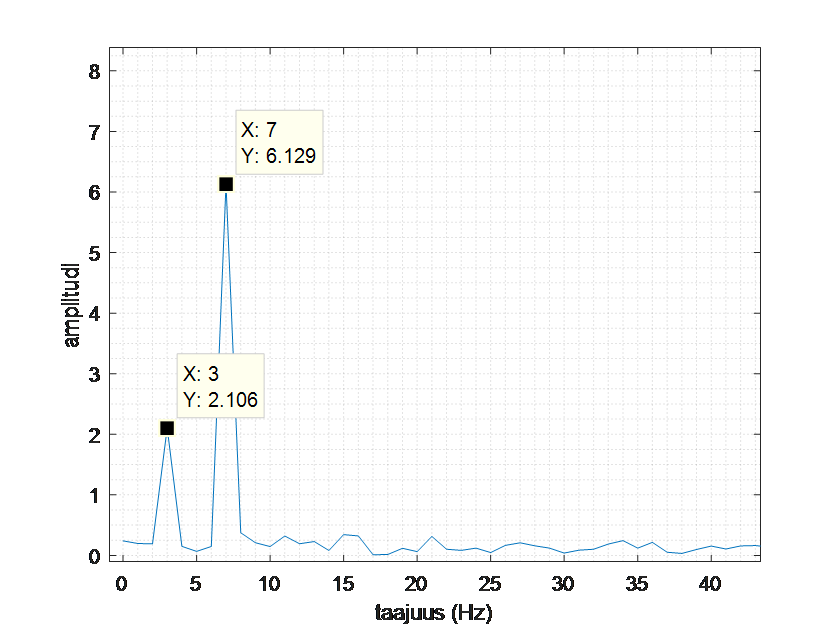
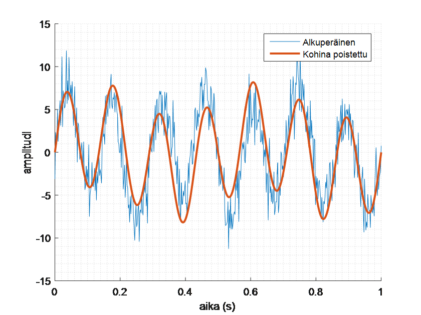
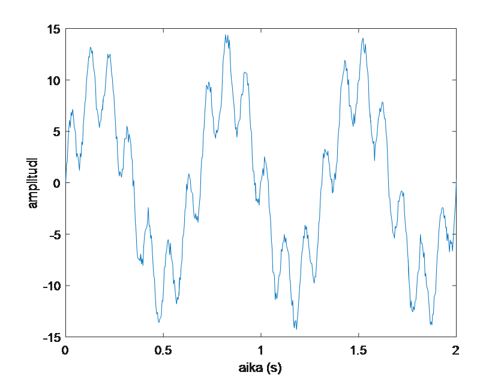
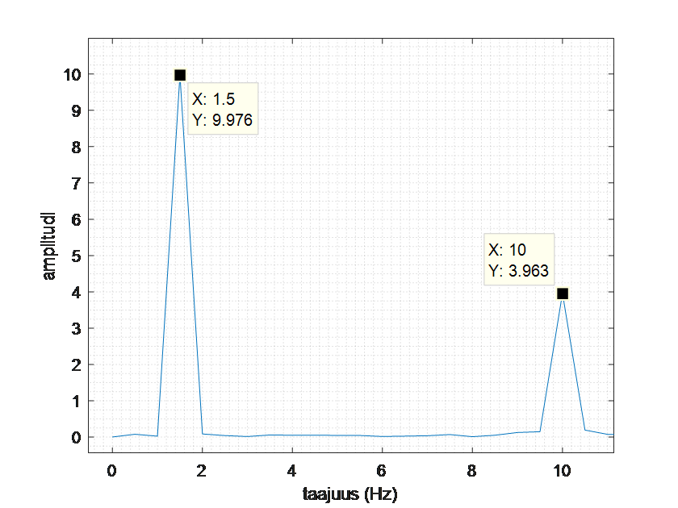
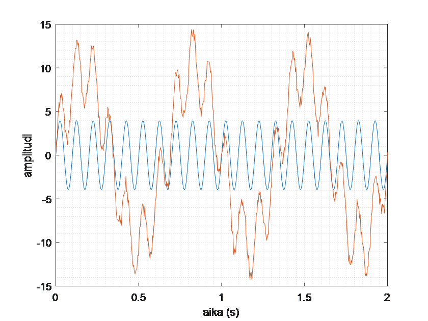

Fourier-muunnos
Contents
Fourier-muunnos#
Fourier-muunnos on yleinen menetelmä kohinaa sisältävän datan analysoimiseen ja käsittelyyn. Sitä käytetään esimerkiksi digitaalisen musiikin pakkaamisessa ja sille on paljon sovelluksia myös esim. lääketieteessä ja teollisuudessa,
Oletetaan, että \(f(t)\) on jokin ajasta \(t\) riippuva funktio. Fourier-muunnos perustuu integraalilaskentaan, joten funktion \(f(t)\) pitää olla integroituva. Muunnoksen tuloksena on toinen funktio \(F(\omega)\), jossa muuttujana on taajuus \(\omega\). Esimerkiksi jostakin soittimesta kuuluva ääni voidaan esittää äänenvoimakkuuden vaihteluna \(f(t)\) ajan suhteen, mutta toisaalta myös siten, että ilmaistaan funktion \(F(w)\) avulla, mitä taajuuksia \(\omega\) ääni sisältää.
Muunnoksen perustana on fakta, että minkä tahansa epälineaarisen funktion voi esittää erilaisten sinifunktioiden summana. Funktio \(f(t)\) siis puretaan useiksi sinifunktioiksi, joilla on erilainen taajuus ja amplitudi. Nämä sinifunktiot ovat suoraan nähtävissä funktiosta \(F(\omega)\), vaikka itse funktiosta \(f(t)\) niitä ei voi havaita mitenkään.
Fourier-muunnoksen avulla saadaan tietoa siitä, mistä funktio \(f(t)\) muodostuu, vaikka funktion lauseketta ei tiedettäisi. Kuvitellaan jokin monimutkainen teollisuuslaite, jonka tehtävänä on tuottaa juuri tietynlaista sähkövirtaa \(f(t)\). Eräänä päivänä laitteen tuottama virta ei olekaan halutunlaista. Mistä kohdasta kallista laitetta pitäisi alkaa purkaa? Ehkä laitteessa on useita eri osia, joista kukin toimii juuri tietyllä taajuudella. Muutetaan signaali \(f(t)\) muotoon \(F(\omega)\) ja selvitetään sen avulla, onko jokin tavanomaisista taajuuksista kadonnut tai onko niitä ilmestynyt lisää.
Äänidatan käsittelyssä muokataan nimenomaan funktiota \(F(\omega)\). Datasta voidaan esimerkiksi poistaa korkeita taajuuksia vastaavat sinifunktiot, jotka vastaavat korkeita ääniä. Kohinan poisto puolestaan tarkoittaa sitä, että datasta poistetaan kaikki taajuudet, joita vastaavan sinifunktion amplitudi on pienempi kuin jokin valittu kynnysarvo. Muokkaamisen jälkeen funktio palautetaan takaisin muotoon \(f(t)\).
Laskukaava matemaattiselle toimenpiteelle on seuraava: \(F(\omega)=\int_{-\infty}^{\infty} f(t) e^{-i \omega t}~\text{d}t\)
Oikealle datalle ei voi käyttää oppikirjojen integraalikaavoja, vaan käytetään ns. numeerista integrointia. Menetelmästä käytetään nimistyä FFT (Fast Fourier transform). Numeeriset menetelmät vaativat, että signaalin data on kelvollista: datapisteitä pitää olla riittävän tiheässä datassa esiintyviin taajuuksiin nähden. Datapisteiden määrä ja tiheys määrittäävät myös sen, kuinka suurta taajuusaluetta voidaan käsitellä.
Kertaus sinifunktioista#
Sinifunktion perusmuoto on \(f(t)= A \sin{\omega t}\), missä \(A\) on funktion amplitudi eli aallon korkeus, \(\omega\) on ns. kulmataajuus ja \(t\) aika. Sinifunktiolla on aallonpituus \(\lambda\), joka kuvaa aallon peräkkäisten huippujen välistä aikaa.
Aallonpituus ja kulmataajuus ovat yhteydessä siten, että \(\lambda=2\pi/\omega\) ja \(\omega=2\pi/\lambda\). Kulmataajuuden yksikkö on rad/s. Usein kuitenkin käytetään aaltojen taajuutta, eli sitä kuinka monta aaltojaksoa yhteen sekuntiin mahtuu. Sitä mitataan hertseinä (Hz). Taajuus saadaan jakamalla kulmataajuus luvulla \(2\pi\). 
Kuvan sinifunktiossa aallonpituus on \(\lambda=20\) s ja amplitudi \(A=2\). Tällöin kulmataajuus on \(\omega=2\pi/20\) eli \(\pi/10\), ja funktion lausekkeeksi muodostuu \(f(t)=2 \sin{(\frac{\pi}{10}t)}\).
Esimerkkejä Fourier-muunnoksesta#
Seuraavassa on esitelty käytännössä, miten Fourier-muunnosta sovelletaan. Tarkempia yksityiskohtia ja tarvittavia koodeja käsitellään oppitunnilla. Lisämateriaalia on saatavilla opintojakson toteutuksen Moodle-työtilasta.
Esimerkki 1: Funktion jaksollisuuksien löytäminen
Tutkitaan kuvan signaalia. Vaaka-akselilla on aika ja pystyakselilla signaalin voimakkuus. Koska signaalissa on eri korkuisia, mutta säännöllisesti toistuvia piikkejä, voidaan arvella, että signaali koostuu useasta erilaisesta jaksollisesta funktiosta. Tutkitaan tarkemmin näitä jaksollisuuksia erikseen.

Tehdään tietokoneella Fourier-muunnos, jolla saadaan näkyville taajuudet, joita signaalissa esiintyy, ja niiden painokertoimet. Esitetään tulos kuvana, jonka vaaka-akselilla on taajuus (1/s) ja pystyakselilla amplitudi. Kuva koostuu kolmesta piikistä, joten signaali muodostuu on kolmesta sinifunktiosta. Kuvasta nähdään, että niiden sinifunktioiden taajuudet, joista ensimmäisen kuvan signaali koostuu, ovat selvästi 5 Hz (painokerroin 3), 8 Hz (painokerroin 4) ja 10 Hz (painokerroin 1).

Lopuksi tarkistetaan, ovatko painokertoimet ja taajuudet oikein. Piirretään samaan kuvaan kaikki kolme sinifunktiota: \(5 \sin{(2\pi \cdot 5t)}\), \(4 \sin{(2\pi \cdot 8t)}\), \(\sin{(2\pi \cdot 10t)}\), sekä niiden summa. Kuvasta nähdään, että yhteenlaskettuna nämä kolme sinifunktiota muodostavat saman funktion kuin alkuperäisessä kuvassa.

Esimerkki 2: Kohinan poistaminen signaalista
Seuraavassa kuvassa on aikasignaali, jossa selvästi esiintyy satunnaista kohinaa eli häiriöitä, jotka haluttaisiin poistaa.

Fourier-muunnoksen avulla löydetään signaalista seuraavat taajuudet:

Kaksi korkeinta piikkiä vastaavat signaalin varsinaisia taajuuksia, ja matalammat piikit tarkoittavat kohinaa. Voidaan siis muodostaa alkuperäistä signaalia vastaava, mutta kohinaton signaali: \(2.106 \sin{(2\pi \cdot 2t)}+6.129 \sin{(2\pi \cdot 7t)}\). Alkuperäinen ja kohinasta siistitty signaali ovat seuraavassa kuvassa.

Esimerkki 3: Taajuuksien poisto signaalista
Seuraavassa kuvassa on signaali, jossa on samassa ”harvoja” ja ”tiheitä” aaltoja. Jos halutaan tarkastella tarkemmin pelkästään tiheämpää siniaaltoa, voidaan signaalista poistaa harvakseltaan esiintyvät matalan taajuuden aallot. Signaalissa on mukana myös hieman satunnaista kohinaa.

Fourier-muunnoksen avulla saadaan selville signaalissa esiintyvät taajuudet:

Muodostetaan näiden tietojen perusteella signaali, joka sisältää ainoastaan tiheimmän aallon, ilman matalamman taajuuden vaihtelua ja kohinaa: \(3.963 \sin{(2\pi \cdot 10t)}\). Seuraavassa kuvassa tämä signaali on piirretty samaan kuvaan alkuperäisen signaalin kanssa.
